Baka med Olivia
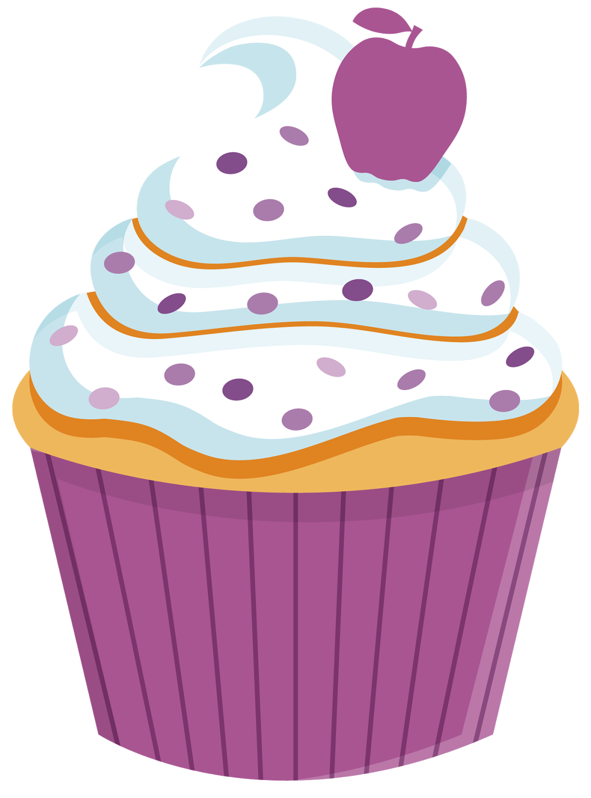
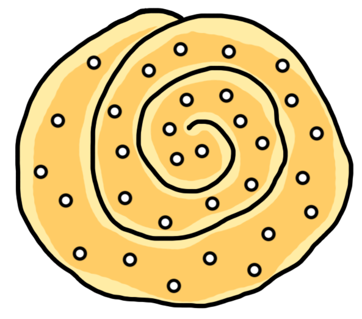
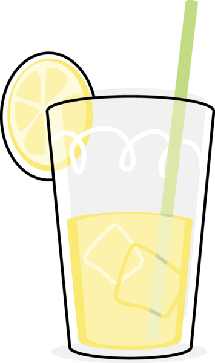
Julafton
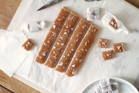
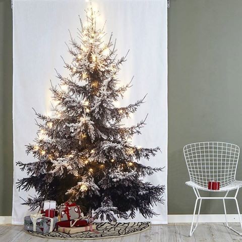
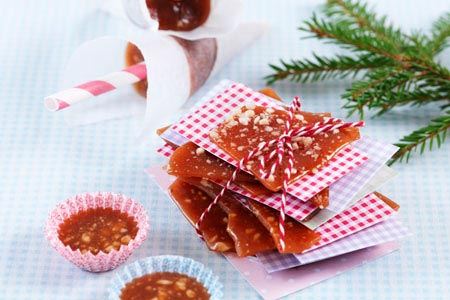
Kola innehåller socker,sirap,vispgrädde
och vaniljsocker, Använd gärna salt för extra smak. Den kokas och hälls ut på en plåt för att sedan svalna, sen använder man kniv eller sax för att klippa rutor.
Kolors konsistens är seg och smälter i munnen.
Knäck är godis som består av socker,sirap, grädde och hackad mandel. Den kokas och läggs sedan i små pappers formar som sen stelnar.
knäcken blev känd i slutet av 1600- talet och klassas som en svensk jultradition.
Att baka inför julen är alltid kul och att baka något sött och kladdigt uppskattas alltid. Lägg upp på fin assiett och servera under fika på dopparedagen.
Midsommar
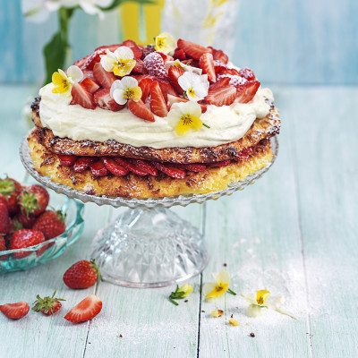

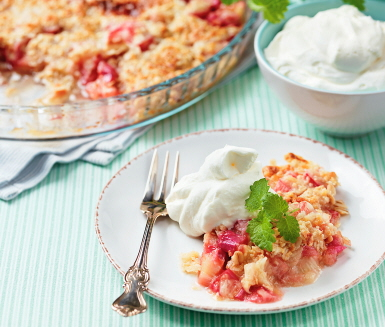
När man säger Midsommartårta så tänker de flesta på grädde och jordgubbar eftersom precis som köttbullar och potatis är jordgubbar och grädde en lika viktig ingrediens i midsommar.
Rabarberpaj är en klassiker till sommaren som många anser som en fräsch dessert.
Den äts mest där rabarber odlas.
Rabarber har en syrlig smak som kompenseras fint med smuldeg, det är den perfekta kombinationen av syrligt och sött och har även bra tuggmotstånd. Lägg till vaniljvisp för extra smak.
Midsommar är mycket sol och skoj så använd gärna ljusa färger som pasteller eller verkligen färgglada färger från kläder till dukning.
Så se till att era bakverk blir lika goda som fina.
Födelsedag
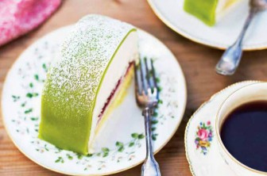
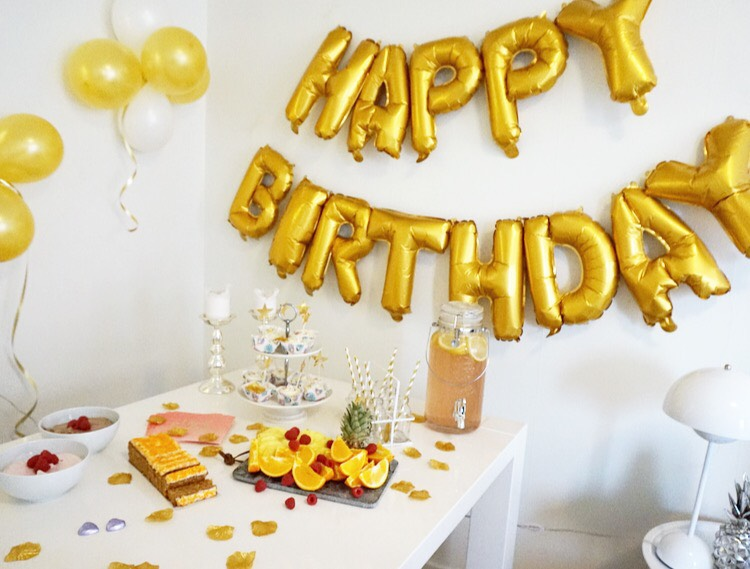

Den klassiska prinsesstårtan som jag skulle säga är Sveriges mest kända bakverk.
Den innehåller sylt, vaniljkräm, grädde och utanpå ett lager med marsipan och på toppen en ros.
Den är en tårta som du kan hitta på de flesta bagerierna och som alltid uppskattas på födelsedagar och bjudningar.
Cupcakes är en jättebra möjlighet till att göra allt mer personligt.
Du kan baka en cupcake som är i helt dina smaker och färg.
välj ett muffins recept och sedan gör frosting till.
På partyn kan man göra olika för fler smakupplevelser och samtidigt ha väldigt roligt i köket.
Att fylla år betyder ett nytt år kanske ny smak och tycke, på födelsedagen ska man visa fram sin personlighet och genom att visa att du kanske gillar vissa saker mer eller mindre.
Det finns så många olika varianter av bakverk med olika smaker och se till att det du bjuder på under kalaset ska du gilla.
Halloween

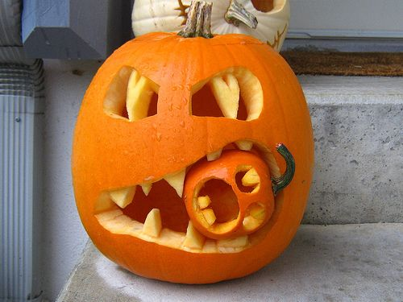

Cake pops är en perfekt liten dessert som kan dekoreras väldigt detaljrikt.
Man gör som en sockerkaka och smular sönder den, sedan binder man i hop den med smör som gör det till en deg, efter formar den som en boll och lägger den i frysen. Doppa sedan cake popsen i smält choklad eller glasyr och dekorera.
Fingrar gjorda på marsipan med nån nöt som föreställer en nagel.
Väldigt festliga inför Halloween och ser super roligt ut på bordet.